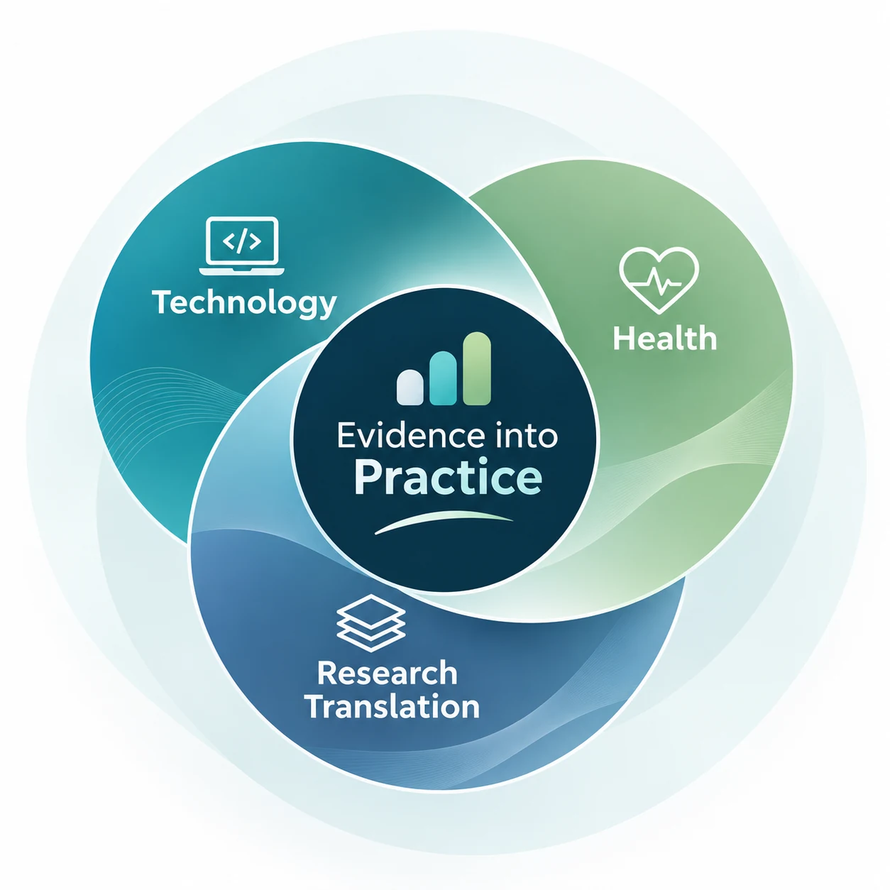
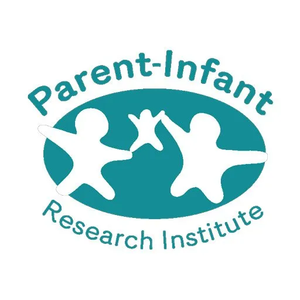
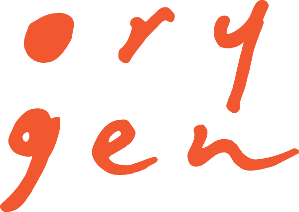

01 / DIGITAL HEALTH
Digital Health
Designing, developing and evaluating evidence-informed digital solutions, with established expertise in digital mental health.
Discuss a project ↗Specialist digital health consultancy
We connect evidence, people and technology to create digital health solutions that work in the real world.

Our expertise
Three complementary service areas, brought together by a practical understanding of healthcare and implementation.
Designing, developing and evaluating evidence-informed digital solutions, with established expertise in digital mental health.
Discuss a project ↗Practical support for FHIR strategy, interoperability, implementation, testing and capability building.
Explore FHIR services ↗Evidence-informed advisory for identifying, evaluating and responsibly implementing AI opportunities in healthcare.
Discuss AI opportunities ↗Good technology matters.
What matters more is making it work for people.
How we work
Implementation science informs how we approach every engagement — from understanding the setting to designing for adoption and sustainability.
People, workflows, systems and the problem that needs solving.
Work with stakeholders, iterate and test early.
Plan for safety, usefulness, adoption and lasting impact.
Selected work
A snapshot of Thriver projects and the principal consultant's wider digital health experience.
Digital support for mental wellbeing during pregnancy and after birth.
Self-help and wellbeing resources designed for young people.
Digital support developed for international students.
Simulation and usability testing in primary care stepped-care delivery.
Digital decision-support and research translation experience.
FHIR education, tools and implementation experience.
Thriver client projects and the principal consultant's previous institutional work are labelled separately. This is a selected portfolio, not a comprehensive list.
Our collaborators
Across digital health development, research and implementation.


About Thriver
Thriver Consulting is led by Dr Madhavan (Mady) Mani, bringing together software engineering, applied psychology, digital mental health research and healthcare interoperability.
Based in Brisbane, working with teams to translate promising ideas into practical digital health solutions.
Start a conversation
Tell us what you're working on. We'll explore where we can help.
Share a little about your project or question.